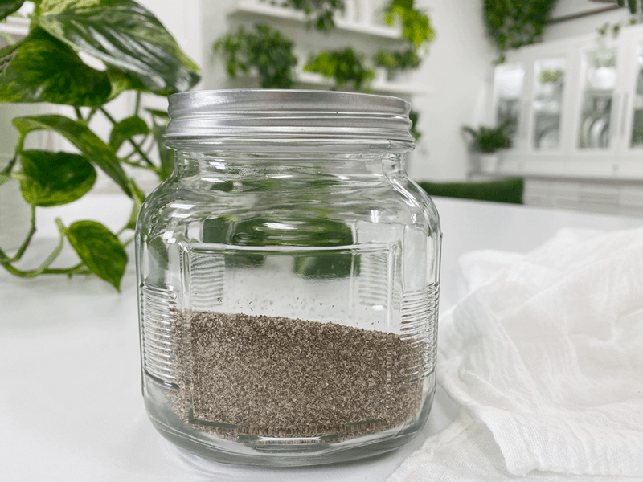

Chia Seed Flour – freshly ground as needed
Like flax, chia is highly ‘hydrophilic’ which simply means that the seeds absorb water and create a mucilaginous gel. They can hold 9-12 times their weight in water, and they absorb it very rapidly, in under 10 minutes. Just long enough to give you time for you to call your mother and tell her that you love her. :) Soaked ground chia seeds will appear to contain not seeds or water, but almost solid gelatin.

How to use Chia Flour
Due to its ability to absorb both water and fat, it can be used to thicken sauces, soups, porridges, crackers, and raw breads. A good thing to know is that chia can cause raw breads or crackers to be more of a gray color if you use a higher percentage of chia compared to other flours/ binders. Sometimes I like to use a combo of flax and chia seeds. The cool thing (well another cool thing) about chia seeds is that they are neutral in flavor where flax isn’t.
Once you add chia flour to a recipe and stir in the liquids, it is usually always recommended to let the batter rest for 10+ minutes, giving it time to gel up and go into binding action! I also find it helpful to whisk the flour into a liquid first, preventing lumps from forming. Regardless of when you add it to a recipe, if you see a chia glob, whisk that baby out… no one wants to catch a bite of chia goo.
Great Health Benefits
- 1 ounce of chia seeds contains; Calories 138 / Fat 9 g / Carb 12 g / Fiber 10 g / Protein 4.7 g
- High in antioxidants.
- Due to their high level of fiber, it doesn’t raise blood sugar, which makes chia a low-carb friendly food.
- Chia seeds contain more Omega-3s than salmon, gram for gram.
- They are a complete source of protein, providing all the essential amino acids in an easily digestible form. They are also a fabulous source of soluble fiber.
- It helps control acid reflux.
- High in protein, lipids, & antioxidants.
- Slows glucose absorption.
Ingredients:
yields 2 cups chia flour
Preparation:
- Place the seeds in a dry blender grain container, Bullet, coffee or spice grinder.
- Grind until it resembles a flour-like texture.
- I recommend grinding the seeds as needed because the oil in chia is volatile, which means that it is very prone to oxidation (rancidity) unless it is stored correctly.
- Should you grind up t0o much at one time, you must protect those oils by storing it in the fridge or freezer, in dark containers, preferably being consumed within a few weeks of grinding.
© AmieSue.com